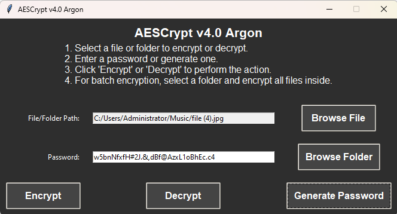

Overview
AESCrypt v3.5 Argon is a sophisticated file and folder encryption application designed for secure data protection. Utilizing advanced cryptographic methods, it implements Argon2 for password hashing and AES-256 for encryption, ensuring the highest levels of security for sensitive information. This document provides a detailed exploration of the program's structure, functionalities, and underlying security mechanisms.
Features
- File Encryption: Encrypts individual files using AES-256, ensuring that data is unreadable without the correct password.
- File Decryption: Allows users to decrypt previously encrypted files, restoring original data from the encrypted format.
- Batch Encryption: Facilitates the encryption of all files within a selected folder, streamlining the process of securing multiple documents at once.
- Password Generation: Offers a feature to generate strong, random passwords, enhancing security by preventing weak password choices.
- User-Friendly GUI: Features a modern, dark-themed graphical user interface, making navigation intuitive and accessible.
- Secure File Deletion: Implements a secure deletion method that overwrites original files before removal, preventing unauthorized data recovery.
- HMAC for Integrity: Uses HMAC (Hash-based Message Authentication Code) to ensure that the data integrity is maintained during encryption and decryption processes.
- Cross-Platform Compatibility: Functions seamlessly on various operating systems, allowing users from different environments to utilize AESCrypt without issues.
Installation
To install AESCrypt v3.5 Argon, follow these steps:
Prerequisites
Ensure you have Python installed on your system. Download it from python.org.
Cloning the Repository
Clone the AESCrypt repository using Git:
git clone https://github.com/victormeloasm/AESCrypt.gitInstalling Dependencies
Navigate to the cloned directory and install the required packages:
pip install -r requirements.txtUsage
To start using AESCrypt v3.5 Argon:
Launching the Application
You can run the application by executing the script in a terminal:
python AESCrypt.pyIf compiled into an executable, double-click the generated `.exe` file.
User Interface Overview
The application interface is structured as follows:
- File/Folder Path: Field for inputting the file or folder to encrypt or decrypt.
- Password Entry: Field to enter a password, with an option to generate a random one.
- Action Buttons: Buttons to initiate encryption, decryption, or password generation.
Encrypting Files
- Select a file by clicking "Browse File".
- Enter a secure password or click "Generate Password".
- Click "Encrypt" to secure the file. The output will have an `.aes` extension.
Decrypting Files
- Select the `.aes` file to decrypt.
- Enter the corresponding password.
- Click "Decrypt" to restore the original file.
Encrypting Folders
- Click "Browse Folder" to select a folder for encryption.
- Enter or generate a password.
- Click "Encrypt" to encrypt all files within the selected folder.
Security Considerations
Security is a critical component of AESCrypt v3.5 Argon. Key considerations include:
- Strong Passwords: Users are encouraged to create strong and unique passwords for encryption to mitigate the risk of unauthorized access.
- Secure Memory Management: The application is designed to clear sensitive data from memory post-use, reducing the risk of data leakage.
- Regular Updates: Keep the software updated to ensure you have the latest security enhancements and bug fixes.
- Data Backups: Regularly back up sensitive data to prevent loss or corruption, especially before performing encryption operations.
License
This project is licensed under the MIT License. Please refer to the LICENSE file for more information.